Slide 3 Modelagem de Bancos de Dados
3.1 Introdução: Visitando a teoria de Bancos de Dados
Banco de Dados Um banco de dados é uma coleção compartilhada de dados logicamente relacionados, projetada para atender às necessidades informacionais de uma organização. - DATE, C. J. An Introduction to Database Systems. 8. ed. Boston: Addison-Wesley, 2003.
Ou seja, alguns pontos-chave da definição de Date:
“Coleção de dados …” → não é um conjunto de arquivos soltos, mas dados organizados.
“Compartilhada …” → não pertence a apenas um usuário ou aplicação; é usada por vários.
“Dados logicamente relacionados …” → os dados têm um relacionamento semântico, não são apenas agrupamentos arbitrários.
“Projetada para atender necessidades …” → o banco existe para suportar os processos de uma organização (consultas, relatórios, controle, tomada de decisão).

Banco de Dados Relacional Um banco de dados relacional é um banco de dados baseado em um modelo de dados relacional, no qual os dados são representados como um conjunto de relações (tabelas), e cada relação consiste em tuplas (linhas) e atributos (colunas). - SILBERSCHATZ, Abraham; KORTH, Henry F.; SUDARSHAN, S. Database System Concepts. 6. ed. New York: McGraw-Hill, 2010.
Agora, alguns pontos-chave da definição de Abraham Silberschatz :
Base no modelo relacional de Codd (1970).
Dados representados em tabelas (relações).
Cada tabela é composta de tuplas (linhas) e atributos (colunas).
Integridade garantida por restrições (chaves, integridade referencial, domínio de atributos).
Manipulação feita por linguagens relacionais (álgebra relacional, cálculo relacional, SQL).
O Banco de Dados Relacional organiza as informações em tabelas bidiomensionais constituídas de linhas e colunas chamadas e essas tabelas recebem o nome de relações. Cada relação possui um campo-chave que confere identificação exclusiva a cada registro da tabela.
3.2 Modelo Matemático de um Banco de Dados
Considere um Banco de Dados para representar, com consistência Matemática os funcionários e Departamentos de uma Empresa.
3.2.1 Podemos representa-lo matemáticamente utilizando a teoria dos conjuntos

Figure 3.1: Diagrama de Montadoras, Veículos e Proprietários
3.2.2 Então para podemos relacionar estes dois conjuntos (Funcionários e Departamentos) utilizando a Teoria das Funções
\[ \text{Edgard Frank Codd era um matemático tradicional} \\ \text{Considere o conseito de função: } \\ f(x) = Y \\ \text{era dessa forma que ele imaginava relacionamento e } \\ \text{ garantia matemática de CONSISTÊNCIA entre } \\ \text{ elementos de 2 conjuntos de dados diferentes } \]

Figure 3.2: Diagrama de Montadoras, Veículos e Proprietários
Mas vai ficar faltando como representar os atributos nesse modelo (colunas das tabelas):
\[ \begin{array}{c| c | c} \textbf{ Conjunto Funcionários} & \textbf{ Relacionamento Trabalha} & \textbf{Conjunto Departamentos)} \\ \hline FULANO & \quad TRABALHA & \quad RH \\ BELTRANO & \quad TRABALHA & \quad FINANCEIRO \\ CICLANO & \quad TRABALHA & \quad DEIRETORIA \\ \hline \textbf{Total: 3 ELEMENTOS } & \textbf{ CONECTADOS } & \textbf{Total: 3 ELEMENTOS } \end{array} \]
Ainda, é necessário acrescentar algumas regras de integridade a representação;
3.3 Modelo Lógico de Banco de Dados
3.3.1 Modelo Conceitual “Entidade Relacionamento” de Banco de Dados
O Modelo Entidade-Relacionamento (MER), proposto por Peter Chen em 1976, é uma ferramenta fundamental na modelagem de dados. É um modelo de dados de alto nível que descreve a estrutura conceitual de um banco de dados. O Modelo Entidade-Relacionamento (MER) é representado graficamente através de um DER (Diagrama Entidade-Relacionamento).
É utilizado para projetar Bancos de Dados Relacionais a partir de entrevistas onde se descreve as informações que se deseja armazenar de forma consistente. Exemplo:
“Desenhe um diagrama entidade-relacionamento DER contendo as entidades funcionarios e departamentos. A entidade ”funcionários” possui os atributos ”nome” e ”CPF”. A entidade ”Departamentos” possui os atributos ”Nome” e ”sigla”. O atributo ”CPF” é chave primária da entidade ”Funcionários”. O atributo ”sigla” é chave primária da entidade ”Departamentos”. As entidades ”Funcionários” e ”Departamentos” se relacionam através de um relacionamento chamado ”Pertence”.”
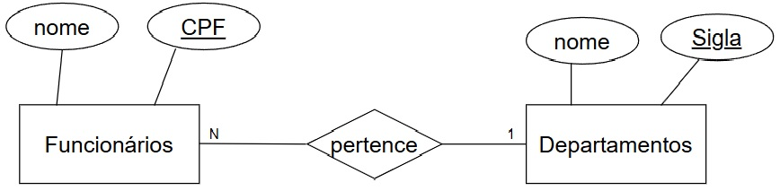
Segundo Laudon
Diagrama Entidade/Relacionamento (DER) é uma representação esquemática utilizada para entender as relações entre as tabelas de um banco de dados relacional. [[1] - LAUDON, Kenneth C.; LAUDON, Jane P. *Sistemas de informação gerenciais*. 11. ed. São Paulo: Pearson Education do Brasil, 2010. p. 180.]
3.3.2 Composição e Significado do Diagrama Entidade Relacionamento (DER)
| Nome | Desenho | Significado |
| Entidade | 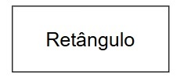 |
Representa uma tabela e é identificada no texto por um substantivo. |
| Nome | Desenho | Significado |
| Atributo | 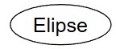 |
Representa uma coluna e é identificada no texto por um adjetivo. |
| Nome | Desenho | Significado |
| Relacionamento | 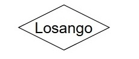 |
Representa uma Referência e é identificada no texto por um Verbo. |
3.4 Modelo Físico de Banco de Dados
3.4.1 Geração do modelo Físico para aplica-lo ao SGBD (Sistema de Gerenciamento de Banco de Dados):
Uma vez que o modelo conceitual seja gerado, o analista pode mapea-lo para um “modelo físico” onde se mapeiam chaves primárias e chaves forasteiras nas tabelas.
Após a geração do modelo físico pode-se gerar o SQL que monta a estrutura do Banco de Dados.

3.4.2 Código SQL - Implementação do Modelo Físico
-- Exemplo testado e gerado no SGBD Postgres versão 15
-- Tabela Funcionários
CREATE TABLE IF NOT EXISTS "public".funcionarios
(
cpf bigint NOT NULL,
nome varchar(200)
);
-- Tabela Departamentos
CREATE TABLE IF NOT EXISTS "public".departamentos
(
sigla integer NOT NULL,
nome varchar(200)
);
-- Definindo a coluna "cpf" da tabela "funcionários" como chave primária
alter table "public".funcionarios add constraint "chave_primaria_funcionarios" primary key (cpf);
-- Definindo a coluna "sigla"" da tabela "departamentos" como chave primária
alter table "public".departamentos add constraint "chave_primaria_departamentos" primary key (sigla);
-- Gerando a integridade referêncial
-- Importando a chave primária da tabela "departamentos" como "chave estrangeira"
-- na tabela "funcionários"
-- primeiro adiciona-se a coluna estrageira "sigla" que é coluna originalmente
-- pertencente a tabela departamentos
alter table "public".funcionarios add column sigla integer;
-- finalmente conecte a coluna sigla a chave primária da tabela "departamento"
-- criando então uma chave estrageira na tabela "funcionários".
alter table "public".funcionarios add constraint "Chave_estrangeira_Departamento_funcionarios" foreign key (sigla) references "public".departamentos(sigla);3.5 EXEMPLO: REVENDA DE VEÍCULOS MULTI-MARCAS
Uma revenda de veículos multimarcas deseja informatizar seu negócio e precisa de um banco de dados que registre informações sobre veículos, fabricantes e clientes. Cada veículo deve ter código de identificação, modelo, ano de fabricação, cor, preço e chassi. Todo veículo pertence a um fabricante. O fabricante é identificado por um código e deve ter armazenados seu nome e país de origem. A revenda vende veículos para clientes, e cada venda deve registrar a data, o valor da negociação e a forma de pagamento. Um cliente pode comprar mais de um veículo, mas cada veículo só pode ser vendido uma vez. Cada cliente é identificado por um código e deve ter armazenados seu nome, CPF/CNPJ, telefone e endereço.
3.5.1 Modelo Matemático
Para tratar problemas desta natureza, o professor em matemática da Universidade do Tenesse, Prof Edgar Frank Codd (1923-2003) procurou inicialmente utilizar teorias matemáticas para organizar e oferecer consistência aos dados:
Teoria dos Conjuntos - Ajudaria a organizar e agrupar os dados em conjuntos;
Teoria das Funções - A idéia era fornecer um mecanismo de consistência aos dados de conjuntos diferentes relacionados. Por exemplo, haveria uma função que mapeasse um um elemento do conjunto
veículoa outro elemento do conjuntomontadora.
3.5.1.1 Representação Matemática em Conjuntos e seus Elementos :

Figure 3.3: Diagrama de Montadoras, Veículos e Proprietários
3.5.1.2 Gerando os Relacionamentos “Matemáticamente” - (Teoria das Funções, Domínios e Imagens):

Figure 3.4: Diagrama de Montadoras, Veículos e Proprietários
A limitação deste modelo logo apareceria: a forma matemática não conseguia representar os diferentes atributos que distinguiam cada elemento existente dentro de um conjunto.
3.5.2 Modelo Lógico: Modelo Entidade Relacionamento
em 1978 , o professor Peter Pin-Shan Chen da universidade norte-americana de Luisiania apresentou o Modelo Entidade Relacionamento. Este modelo apresentava uma forma de modelar projetos de Bancos de Dados relacionais, independemente de plataforma tecnológica ( UNIX, Windows etc).
3.5.2.1 Modelo Entidade Relacionamento
O modelo Entidade Relacionamento, também chamado de MER, consistem em traduzir um texto para um modelo de Banco de dados utilizando a morfologia da gramática da língua portuguesa com a seguinte regra:
| Classe morfológica da palavra | CORRESPONDÊNCIA NO MODELO MATEMÁTICO | CORRESPONDÊNCIA NO MODELO LÓGICO | CORRESPONDÊNCIA NO MODELO FÍSICO-RELACIONAL |
Substantivos |
CONJUNTOS |
ENTIDADES |
TABELAS |
Adjetivos |
N/A | ATRIBUTO |
COLUNAS |
Verbos |
Idéia de “funções y=f(x)” | RELACIONAMENTOS |
CHAVE ESTRANGEIRA |
Tomando como exemplo a revenda de carros:
| Classe morfológica da palavra | |
Substantivos |
VEÍCULOS, FABRICANTES, CLIENTES |
Adjetivos |
Referentes a veículos: Referentes a fabricante: Referentes a cliente: |
Verbos |
Fabricante - clinte - |
3.6 Relacionamentos e Cardinalidade
A cardinalidade define quantas ocorrências de uma entidade podem estar associadas a ocorrências de outra entidade em um relacionamento.
Ela é fundamental para entender as regras de negócio do banco de dados e deve estar sempre representada no Diagrama Entidade-Relacionamento (DER).
3.6.1 🔹 Tipos principais de cardinalidade
- Um para Um (1:1)
- Um para Muitos (1:N)
- Muitos para Muitos (N:N)
A seguir, vamos detalhar cada caso.
3.6.2 1. Relacionamento 1:1 (Um para Um)
Um exemplo clássico:
- Cada MARIDO possui uma única ESPOSA.
- Cada ESPOSA pertence a um único MARIDO.
3.6.3 Relacionamento 1:N (Um para Muitos)
Exemplo:
Um Cliente pode fazer muitos Pedidos.
Mas cada Pedido só pode pertencer a um Cliente.
3.7 Entidade Dominante e Entidade Subordinada
No Modelo Entidade-Relacionamento (MER), algumas entidades só existem dependendo da existência de outra.
Nesses casos, usamos os conceitos de Entidade Dominante e Entidade Subordinada.
3.7.1 Definições:
Entidade Dominante (ou Forte):
É uma entidade que existe por si só, sem depender de nenhuma outra.
Ex.: Cliente, Produto, Funcionário.Entidade Subordinada (ou Fraca):
É uma entidade que depende de outra para existir.
Ela não possui chave primária própria completa e precisa da chave da entidade dominante.
Ex.: ItemPedido, Dependente, Parcela.
A entidade subordinada é representada por um losango duplo (relacionamento identificador) em algumas notações, ou simplesmente destacada como entidade fraca.
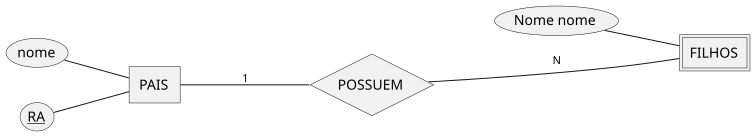
Outro Exemplo:
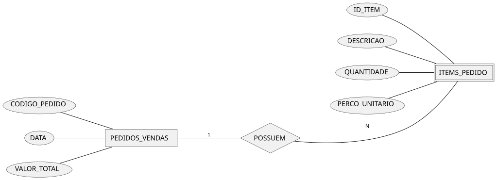
3.8 Normalização em Bancos de Dados Relaionais
3.8.1 Tabela Desnormalizada

Considere a tabela Veículos abaixo:
| Modelo | Montadora |
|---|---|
| Strada | Fiat |
| Mobi | Fiat |
| Pulse | Fiat |
| Onix | Chevrolet |
| Tracker | Chevrolet |
| Onix Plus | Chevrolet |
| Polo | Volkswagen |
| Nivus | Volkswagen |
| T-Cross | Volkswagen |
| HB20 | Hyundai |
| Creta | Hyundai |
Separamos o conjunto de elemntos Montadoras e Modelos.
| MontadoraID | Montadora |
|---|---|
| 1 | Fiat |
| 2 | Chevrolet |
| 3 | Volkswagen |
| 4 | Hyundai |
| ModeloID | Modelo |
|---|---|
| 101 | Strada |
| 102 | Mobi |
| 103 | Pulse |
| 201 | Onix |
| 202 | Tracker |
| 203 | Onix Plus |
| 301 | Polo |
| 302 | Nivus |
| 303 | T-Cross |
| 401 | HB20 |
| 402 | Creta |
O processo de fragmentar agrupamentos complexos de dados e simplifica-los a fim de minimizar redundâncias e economizar espaço no Banco de Dados Relacional é chamado de NORMALIZAÇÃO. [[1] - LAUDON, Kenneth C.; LAUDON, Jane P. *Sistemas de informação gerenciais*. 11. ed. São Paulo: Pearson Education do Brasil, 2010. p. 180.]
Mas Como indicar que cada elemento da tabela “Modelo” está associado a um elemento da tabela “Montadora” ?
3.8.2 Tabela Normalizada
Considere as tabelas abaixo:
| MontadoraID | Montadora |
|---|---|
| 1 | Fiat |
| 2 | Chevrolet |
| 3 | Volkswagen |
| 4 | Hyundai |
| ModeloID | Modelo | MontadoraID |
|---|---|---|
| 101 | Strada | 1 |
| 102 | Mobi | 1 |
| 103 | Pulse | 1 |
| 201 | Onix | 2 |
| 202 | Tracker | 2 |
| 203 | Onix Plus | 2 |
| 301 | Polo | 3 |
| 302 | Nivus | 3 |
| 303 | T-Cross | 3 |
| 401 | HB20 | 4 |
| 402 | Creta | 4 |
Repare que:
É possível identificar que não existem montadoras repetidas na tabela “Montadoras”;
É possível identificar que não existem modelos repetidos na tabela “Montadoras”;
A coluna (atributo) ModeloID é a chave primária da tabela Modelos. A coluna (atributo) MontadoraID é a chave primária da tabela Montadoras.
Na tabela Modelos, a coluna MontadoraID, acrescentada a tabela Modelos representa a ligação de cada elemento da tabela Modelos e Montadoras. Essa coluna “importada” da tabela Montadoras para a tabela Modelos se chama chave estrangeira.
3.9 Referências
CHEN, Peter (1990). Gerenciando Banco de Dados. A Abordagem Entidade-Relacionamento para Projeto Lógico. São Paulo: McGraw-Hill. 80 páginas. ISBN 0-07-460575-5
DATE, C. J. An Introduction to Database Systems. 8. ed. Boston: Addison-Wesley, 2003.
SILBERSCHATZ, Abraham; KORTH, Henry F.; SUDARSHAN, S. Database System Concepts. 6. ed. New York: McGraw-Hill, 2010.
CODD, E. F. A Relational Model of Data for Large Shared Data Banks. Communications of the ACM, New York, v. 13, n. 6, p. 377–387, 1970.
3.10 Exercícios RESOLVIDOS
| Exercício 1 — Universidade |
|---|
| Considere uma Universidade que possui vários Cursos. Cada curso tem um nome, uma duração em semestres e um coordenador. A universidade possui Professores, cada um com um nome, título e CPF. Um professor pode ministrar várias disciplinas, e cada disciplina pertence a um único curso. |
|
|
|
|
3.10.0.1 Passo #1 -
Identificar SUBSTANTIVOS no contexto; identificar os ADJETIVOS pertinentes a cada SUBSTANTIVO; identificar os VERBOS de relação entre os substantivos.
Substantivos do contexto: leve-os ao plural |
Adjetivos |
Verbos |
|---|---|---|
UNIVERSIDADE -> UNIVERSIDADES |
|
universidade POSSUI (vários) cursos |
CURSO -> CURSOS |
|
cursos são POSSUÍDOS por (vários) universidades |
PROFESSOR -> PROFESSORES |
|
universidade professor |
DISCIPLINA -> DISCIPLINAS |
|
disciplina disciplina |
3.10.0.2 Passo #2
Criar o MODELO ENTIDADE RELACIONAMENTO (M.E.R.) - Converter SUBSTANTIVO em ENTIDADES; converter ADJETIVOS em ATRIBUTOS e converter VERBOS em RELACIONAMENTOS.
ENTIDADES identificadas:
UNIVERSIDADES,CURSOS,PROFESSORESeDISCIPLINASATRIBUTOS identificados: UNIVERSIDADES [ nome,cnpj ] ; CURSOS [ nome, duração, coordenador, codigo_curso] ; PROFESSORES [ cpf, nome e título] ; DISCIPLINAS [nome e codigo_disciplina]
RELACIONAMENTOS: [universidade-
POSSUI-curso] ; [universidade-POSSUI-professores]; [professor-MINISTRA-disciplina] ; [disciplina-PERTENCE-curso]
3.10.0.3 Passo #3
Criar um DIAGRAMA ENTIDADE-RELACIONAMENTO (D.E.R.) com as informações levantadas:
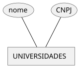
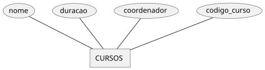
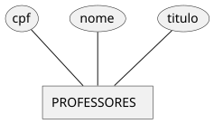
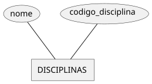
3.10.0.4 Passo #4
Identificar os Relacionamentos:
- [universidade-
POSSUI-curso] ; [universidade-POSSUI-professores]; [professor-MINISTRA-disciplina] ; [disciplina-PERTENCE-curso]
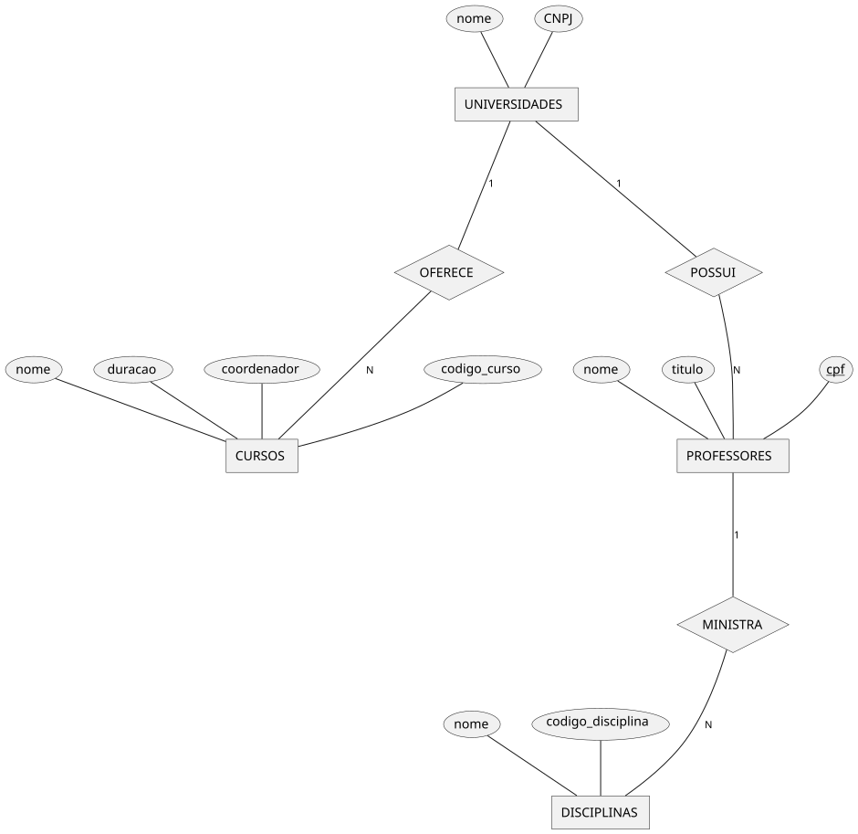
| Exercício 2 — Um Projeto de e-commerce |
|---|
| Um Cliente faz Pedidos em um sistema de e-commerce. Cada cliente tem um nome, endereço e telefone. Os pedidos possuem uma data, um valor total e podem conter vários Produtos. Cada produto tem um nome, uma descrição e um preço. |
|
|
|
|
3.10.0.5 Passo #1 -
Identificar SUBSTANTIVOS no contexto; identificar os ADJETIVOS pertinentes a cada SUBSTANTIVO; identificar os VERBOS de relação entre os substantivos.
Substantivos do contexto: leve-os ao plural |
Adjetivos |
Verbos |
|---|---|---|
CLIENTE -> CLIENTES |
|
(vários) clientes PEDEM (vários) produtos |
PEDIDO -> PEDIDO NÃO É SUBSTABNTIVO, MAS SIM O PARTICÍPIO PASSADO DO VERBO PEDIR. (PEDIR É VERBO !!!) |
|
(vários) clientes PEDEM (vários) produtos |
PRODUTO -> PRODUTOS |
|
(vários) produtos são PEDidos por (vários) clientes |
3.10.0.6 Passo #2
Criar o MODELO ENTIDADE RELACIONAMENTO (M.E.R.) - Converter SUBSTANTIVO em ENTIDADES; converter ADJETIVOS em ATRIBUTOS e converter VERBOS em RELACIONAMENTOS.
Normalmente apenas as ENTIDADES levam atributos. Quando aparece um relacionamento N-N entre duas entidades, também podem aparecer atributos atrelados aos relacionamentos (como é o caso de PEDIDO aqui).
ENTIDADES identificadas:
CLIENTES,PRODUTOSATRIBUTOS identificados: CLIENTES [ nome, endereco, telefone, cpf] ; PRODUTOS [ nome, descricao, preco, cod_produto] ; PEDIDO[data, valor_total]
RELACIONAMENTOS: [cliente-
PEDE-produto] ; [produto-PEDIDO-cliente];
3.10.0.7 Passo #3
Criar um DIAGRAMA ENTIDADE-RELACIONAMENTO (D.E.R.) com as informações levantadas:
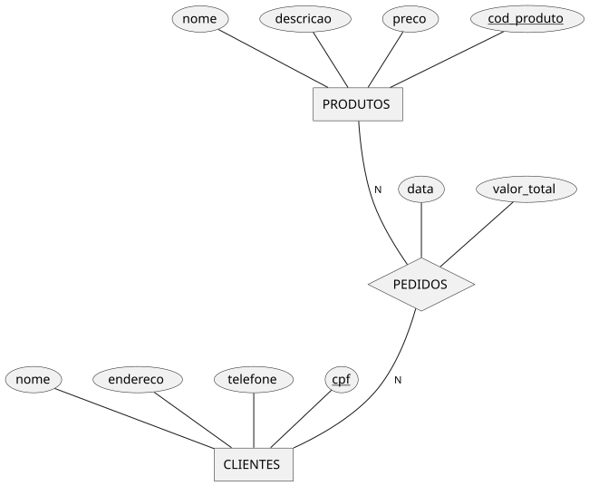
| Exercício 3 — Hospital |
|---|
| Um Hospital registra Pacientes, cada um com nome, idade, endereço e telefone. Os pacientes podem realizar várias Consultas com Médicos. Cada médico possui um CRM, um nome e uma especialidade. Durante a consulta, o médico pode prescrever Receitas, que possuem medicação e dosagem. |
|
|
|
|
3.10.0.8 Passo #1 -
Identificar SUBSTANTIVOS no contexto; identificar os ADJETIVOS pertinentes a cada SUBSTANTIVO; identificar os VERBOS de relação entre os substantivos.
Substantivos do contexto: leve-os ao plural |
Adjetivos |
Verbos |
|---|---|---|
HOSPITAL -> HOSPITAIS |
|
(explícito) hospital (implícito) hospital |
PACIENTE -> PACIENTES |
|
pacientes são (vários) pacientes (vários) pacientes |
MÉDICO -> MEDICOS |
|
(vários) médico(s) (vários) médico(s) |
RECEITA ?? -> RECEITAR é VERBO |
|
médico (vários) paciente(s) |
CONSULTA ?? -> CONSULTAR é VERBO |
|
(vários) pacientes(s) CONSULTA(M) (vários) médico(s) |
3.10.0.9 Passo #2
Criar o MODELO ENTIDADE RELACIONAMENTO (M.E.R.) - Converter SUBSTANTIVO em ENTIDADES; converter ADJETIVOS em ATRIBUTOS e converter VERBOS em RELACIONAMENTOS.
ENTIDADES identificadas:
HOSPITAIS,PACIENTES,MEDICOSATRIBUTOS identificados: HOSPITAIS [ nome,cnpj ] ; PACIENTES [ nome, idade, endereco, telefone, cpf] ; MEDICOS [ crm, nome e especialidade] ;
RELACIONAMENTOS: [medico-
consulta-paciente] ; [medico-receita-paciente]; [hospital-registra-paciente] ; [hospital-POSSUI-medicos]